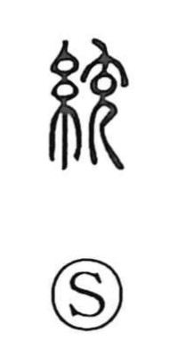

統

Kun: suberu | On: tou
to unite ・ to govern ・ to control ・ to bring together
Explanation
Shirakawa reads 統 as a phono-semantic graph: the left side 糸 “thread” provides the domain of meaning, while 充 serves as the phonetic. He notes that 充 depicts a person seen from the side with a distended belly, and in Shuowen it is explained through the idea of a 紀, a spool or skein—the place where many threads collect. From this image of drawing numerous strands onto a single core, the character came to mean gathering things into one order: to bring together, to unify, and by extension to rule and control. That sense lives on in compounds such as 統一 (unification), 統制 (control), 統理 (governance), 系統 (an ordered system), and 統括・統轄 (to oversee as a whole).